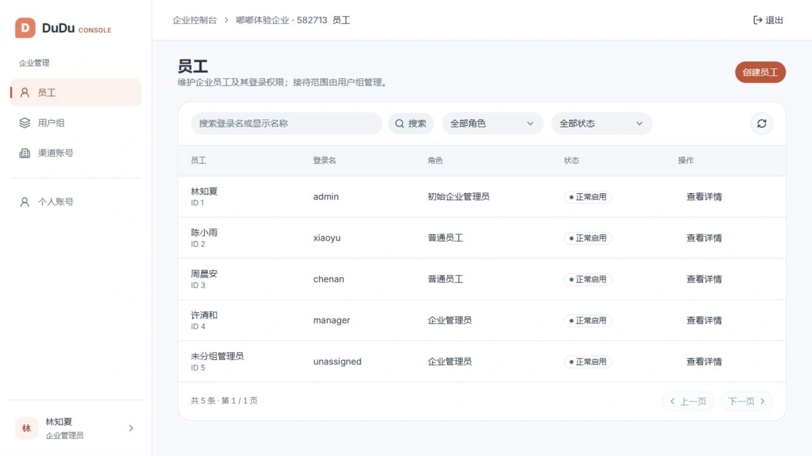
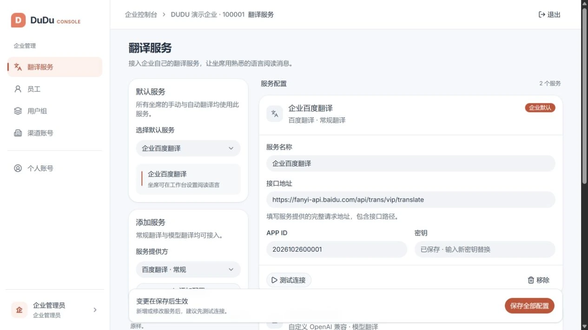
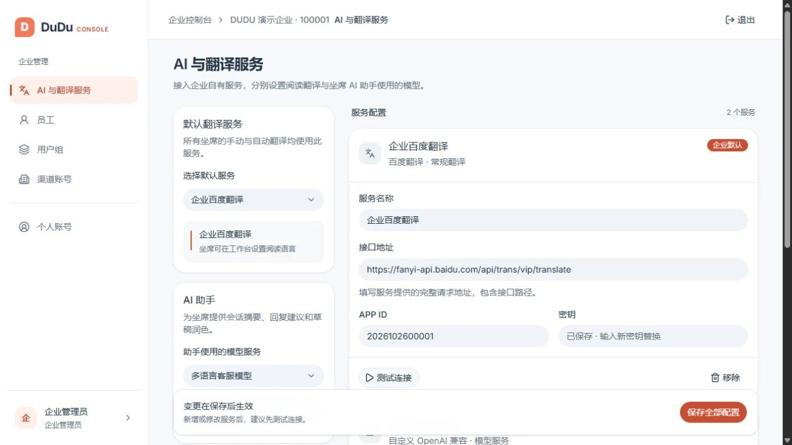

Configure staff, channels and conversation access.
For organization administrators managing staff, user groups and channel accounts. Groups define conversation access; agents reply in Desk.

Configure translation for your team
Connect your own translation API or model service, enter its endpoint and credentials, test the connection and choose a default. Agents keep their own reading language and automatic translation preferences. Availability depends on the service directory and a successful connection test.

Choose translation and assistant services separately
The initial administrator selects an assistant model in AI and translation services, independently of reading translation. Once enabled, recent authorized messages, tags, internal notes and the current draft are sent to that model.

Key capabilities
Staff management
Create and maintain staff accounts, status and permissions within the administrator’s scope.
User groups
Organize team membership and associate channel accounts with the appropriate groups.
Channel accounts
Configure receiving and sending credentials, review callback URLs and missing settings.
Credential protection
Secret credentials are write-only and are not returned in read responses.
Organization translation services
The initial administrator configures conventional or model-based translation services, tests a connection and selects the organization default. Saved secrets are not returned.
Assistant model configuration
The initial administrator selects an assistant model in AI and translation services, independently of reading translation. Once enabled, recent authorized messages, tags, internal notes and the current draft are sent to that model.
How it works
- Sign in with your organization ID and administrator account.
- Set up staff and groups, then assign channel accounts to their support groups.
- Complete platform authorization, callback setup and real messaging validation.
Requirements and scope
Initial and regular administrators have different management scopes. Complete settings do not establish valid platform authorization. A built-in OAuth wizard, automatic connectivity checks and channel health monitoring are not available.
The modules work together: Admin provisions organizations, Console configures teams and channels, Desk handles conversations, and Server provides shared services. MockPulse is an optional development tool.